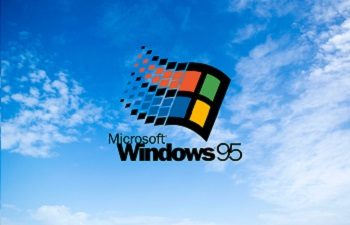
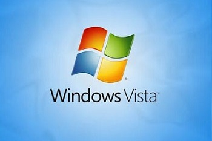

Historia de Microsoft Windows
El 20 de noviembre de 1985 (el grandioso año en el que nací) Microsoft lanzó la primera versión de Windows. Hoy, 30 años después, es el sistema operativo de escritorio más usado en todo el mundo.
Inicios de Microsoft
Bill Gates y Paul Allen fundaron Microsoft en 1975 con la visión de llevar un ordenador personal a cada hogar del mundo. Puede que la historia suene familiar, pues no es la única de este tipo. El primer gran éxito de la empresa no fue Windows, fue MS-DOS (Microsoft Disk Operating System). A principios de los ochenta Steve Ballmer se unió al equipo de Microsoft y un mes después IBM se pone en contacto con la empresa para iniciar un nuevo proyecto.
Se trataba de un nuevo sistema operativo "MS‑DOS", el que dejó mordiendo polvo a CP/M y se convirtió en el software de los equipos IBM. Sin embargo MS-DOS era bastante difícil de usar para muchas personas, estaba muy orientado a informáticos, y Microsoft pensó que había una mejor manera de hacer las cosas.
Windows 1.0
El anuncio inicial se hizo en 1983, el nombre clave del sistema era "Interface Manager" (ya por ahí veíamos por donde venía la cosa). Al final el sistema es llamado "Windows" pues describe mejor las "ventanas" con la información que son la clave fundamental del nuevo sistema operativo. Luego de ser acusados de "vendehumos" y con mucho escepticismo, Microsoft termina el desarrollo con casi dos años de retraso y Windows 1.0 ve la luz del día. Ya no habría que escribir comandos como en MS-DOS, el usuario podrá hacer todo señalando con el ratón y haciendo clic en las diferentes ventanas.
Windows 1.0 tuvo soporte por más de 16 años, el pobre XP ni se le compara. No fue hasta el 2001 que se consideró obsoleto. Los requerimientos mínimos (para morir de risa hoy en día) eran los siguientes:
- 256 kilobytes (KB)
- 2 unidades de disquete de doble cara y una tarjeta adaptadora de gráficos
- Se recomienda un disco duro
- 512 KB de memoria para ejecutar varios programas o si se usa DOS 3.0 o una versión posterior
El primer panel de control
El 9 de diciembre de 1987 Microsoft lanza Windows 2.0, la primera versión de Windows que incluye el panel de control. Windows 2.0 tiene iconos en el escritorio, atajos de teclado, ofrece la posibilidad de superponer ventanas y tiene memoria extendida.
Windows 2.0 fue más popular, y coincidió con la llegada de las nuevas aplicaciones gráficas de Microsoft: Excel y Word for Windows.
En 1988, Microsoft se convierte en la empresa de software más grande del mundo en volumen de ventas.
El sistema operativo más usado
Windows 3.0 llegó al mercado en mayo de 1990, dos años después fue lanzado Windows 3.1. Entre las dos versiones vendieron más de 10 millones de copias, convirtiendo de esta manera al sistema operativo de Microsoft en el más usado del mundo. Con Windows 3.0 llegaron el Administrador de programas, el Administrador de archivos y el Administrador de impresión, además de los legendarios juegos de Solitario, Corazones y Buscaminas.
Internet y Chicago
Microsoft comenzó a trabajar en una nueva versión de su sistema operativo completamente orientada a los nuevo consumidores, el nombre clave del proyecto era "Chicago". Windows 95 hizo la computación personal aún más accesible, permitiendo a los usuarios ejecutar el sistema en equipos más baratos.
Con un récord de ventas de más de 7 millones de copias en sus primeras cinco semanas, Windows 95 lanzado el 24 de agosto de 1995 se convierte en un hito en la historia informática. Microsoft invirtió cantidades descomunales de dinero en publicidad, había hasta un comercial de televisión con los Rolling Stones.
Windows 95 tenía compatibilidad integrada con Internet, conexión de red por acceso telefónico, y en el sistema operativo de 32 bits aparecen por primera vez el menú Inicio, la barra de tareas y los botones para minimizar, maximizar y cerrar ventanas.
En el verano de 1995, se publica la primera versión de Internet Explorer, y todos sabemos lo que pasó después: esa "e" se convirtió en sinónimo de acceso a la web. Internet Explorer fue el primer navegador de verdad bueno que apareció, para la época era verdaderamente bueno, y mejor que cualquier competidor.
Los Estados Unidos vs Microsoft
El 25 de junio de 1998 Microsoft lanzó Windows 98, esta versión del sistema operativo de las ventanas también incluía Internet Explorer como navegador por defecto. La barra Inicio rápido aparece por primera vez, y también los problemas de monopolio. El gobierno de los Estados Unidos investiga a Microsoft por prácticas cuestionables para eliminar la competencia.
Microsoft fue acusado y declarado culpable de de constituir un monopolio. Windows 98 fue la última versión basada en MS‑DOS.
Los fracasos del nuevo milenio
En septiembre del año 2000, Microsoft lanzó Windows Millennium Edition (Windows ME) como sucesor de Windows 98. Fue concebido como un proyecto rápido que serviría de parada entre Windows 98 y XP, y sí que se sintió como tal. Windows ME fue uno de los Windows más odiados por los usuarios, fue altamente criticado por su inestabilidad y nadie tiene nada lindo que decir de él.
Larga vida a Windows XP
Luego del horror de Windows ME, el 25 de octubre del año 2001, Microsoft lanzó WIndows XP, y aunque inicialmente no fue recibido con los brazos abiertos pues necesitó tres service packs para dejar de ser criticado duramente por sus fallos de seguridad, al final Windows XP se convirtió en una de las versiones mas alabadas de todos los tiempos.
Sigue siendo hasta ahora la versión principal de Windows con más longevidad: desde el 2001 hasta el 2007 cuando llegó...
A continuación puede escuchar el sonido de inicio de Windows XP, un sonido icónico en la historia de Windows.
Windows Vista
Fue lanzado el 30 de enero de 2007 y esta versión se enfocaba a la utilización en equipos de escritorio en hogares y oficinas, equipos portátiles, tabletas y equipos media center.
El proceso de desarrollo terminó el 8 de noviembre de 2006 y en los tres meses siguientes fue entregado a los fabricantes de hardware y software, clientes de negocios y canales de distribución. El 30 de enero de 2007 fue su lanzamiento mundial y quedó a disposición para su compra y descarga desde el sitio web de Microsoft Windows.
La aparición de Windows Vista se produjo más de cinco años después de la introducción de Windows XP, en su momento fue el tiempo más largo entre dos versiones consecutivas de Microsoft Windows, pero fue superado por el tiempo entre Windows 10 y Windows 11. La campaña de lanzamiento incluso fue más costosa que la de Windows 95, ocurrida el 25 de agosto de 1995, debido a que esta incluyó además otros productos como Microsoft Office 2007 y Exchange Server 2007. El sucesor de Windows Vista fue Windows 7, que fue lanzado mundialmente el 22 de octubre de 2009.
Windows 7
Luego de la deblace de Windows Vista entre 2006 y 2008, Microsoft corrigió sus errores y en julio del 2009 puso a la venta Windows 7. Considerado por muchos la mejor versión moderna del sistema operativo, Windows 7 solucionó la infinidad de incompatibilidades con todo tipo de controladores que fueron una de las plagas de Vista.
Windows 7 sigue siendo estable, rápido y robusto, y sigue siendo la versión de Windows más utilizada en todo el mundo, aún cuando Microsoft ha lanzado tres versiones más de su sistema desde entonces.
Windows 8
En el 2012 Microsoft presentó Windows 8, luego de un recibimiento más que flojo y con muy pocos usuarios motivados a actualizar de un perfecto si-no-está-roto-no-lo-arregles Windows 7, la empresa de Redmond terminó lanzando poco tiempo después una especie de actualización/nueva versión con Windows 8.1. La desaparición del menú de inicio clásico y el modo a pantalla completa de las nuevas aplicaciones modern, le explotaron en la cara a la empresa quien desde entonces ha ido retrocediendo en todas las decisiones que los usuarios claramente odiaron.
Windows 8.1 sin embargo, fue un paso adelante, un sistema muy estable y rápido con excelente compatibilidad de hardware.
Año 2015: el nuevo Microsoft
Por primera vez en la historia una versión de Windows se ofrece de manera gratuita a los usuarios. Windows 10 es considerado por muchos una de las mejores versiones del sistema, aún con mucho camino que recorrer, Windows 10 es un paso en una nueva dirección, es un punto de inflexión en la historia de Microsoft, y representa el intento de la compañía por cambiar de rumbo para mantenerse relevante.
La historia de Windows tendrá otra forma a partir de ahora, Windows 10 marca un nuevo sistema de actualizaciones que probablemente harán desaparecer del futuro un Windows 11 o un Windows 20. Sea como sea, Windows sigue siendo el sistema operativo más conocido y usado por los usuarios de ordenadores personales en todo el mundo, ya por casi 30 años.